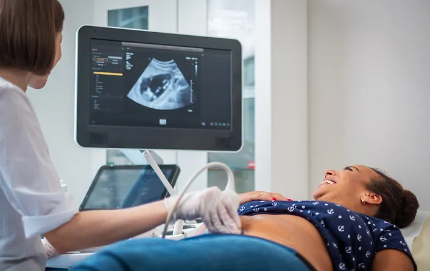

Ultrasound examination
Our expert medical team utilizes Ultrasound examination for diverse applications, ranging from assessing abdominal and pelvic structures to monitoring fetal development. This dynamic imaging modality allows for detailed and immediate observation, contributing to timely and accurate diagnoses. Patients benefit from a painless and radiation-free procedure, making Ultrasound a preferred choice for a wide array of medical evaluations.
With cutting-edge technology and a commitment to patient-centric care, our surgical department ensures that Ultrasound examinations play a pivotal role in enhancing diagnostic capabilities, guiding treatment plans, and ultimately fostering optimal health outcomes for our valued patients